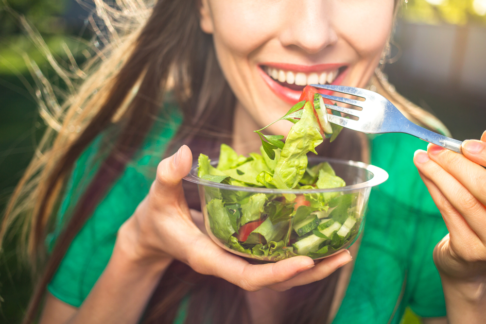

Equipe Healthy Life
A alimentação é parte fundamental de todo planejamento de treinos, sejam eles visando a perda de peso ou a hipertrofia. O que comemos influencia diretamente nos resultados que serão atingidos. Cada alimento fornece nutrientes específicos, os quais têm serventias distintas no corpo humano. Como veremos, uma parte deles é capaz de prover o necessário para potencializar a atividade física – daí a sua importância pré-treino. Por que se alimentar bem antes do treino? PUBLICIDADE Como temos dito, então, os alimentos têm, cada um, uma característica única que forma o seu valor nutricional e as suas propriedades. Enquanto alguns podem trazer até mesmo malefícios à saúde, outros são benéficos. Dentro do grupo dos que auxiliam o corpo a funcionar, temos propriedades nutricionais as quais têm papeis diferentes. Só para ficar nos minerais, enquanto o ferro, por exemplo, é reconhecido por dar força e combater a anemia, o potássio tem boa atuação nos tecidos musculares. É claro que cada nutriente age no organismo de formas distintas. No entanto, existem aqueles que potencializam os músculos ou então que aceleram o metabolismo. Estes casos podem ser úteis para a hipertrofia e para o emagrecimento, respectivamente. Por isso, podemos dizer que o corpo tem diferentes funções e cada nutriente proporciona um melhor uso de alguma dessas funções. No caso do treinamento, por certo, é importante estar bem nutrido com comidas que potencializem esta prática. O que comer e o que evitar comer antes do treino O TEXTO CONTINUA APÓS ESSA PUBLICIDADE! Uma alimentação correta antes do treino prioriza alimentos que dão bastante energia. Ao mesmo tempo, eles também devem fornecer aos músculos maior capacidade de regeneração e de resistência. Veja a importância das proteínas, carboidratos e frutas mais abaixo. O que se deve evitar, via de regra, são os carboidratos que não têm baixo índice glicêmico (IG). Isto porque eles são consumidos muito rapidamente no corpo. Além disso, não é indicado o consumo excessivo de fibras neste momento, já que elas dificultam o processo metabólico e a transformação da energia. Por fim, evite também as gorduras nesse período. Com relação ao tempo, há igualmente orientações bem precisas. No entanto, tudo varia de acordo com qual for a alimentação realizada. O melhor é juntar proteínas magras com um carboidrato de baixo IG em até 90 minutos antes. Caso não consiga comer tanto tempo antes, em 30 a 40 minutos coma biscoitos de arroz, barras proteicas ou lanches rápidos com pães integrais de baixo IG. Isso é apenas uma opção, não deixe se tornar uma regra. De modo alternativo, também é possível realizar suplementação para fornecer o necessário do pré-treino. Leia também: Pré-Treino: Para que serve o suplemento, como tomar e RELATOS Proteínas: elas têm o papel de realizar a regeneração dos músculos, além de fornecer resistência. De modo complementar, as proteínas regulam o metabolismo. Carboidratos: eles são, basicamente, a fonte de energia para o exercício físico, armazenados sob a forma de glicogênio. Sua associação com as proteínas potencializa os efeitos anabólicos do treino. Frutas: prefira as frutas ricas em água, fibras e que não possuam um IG alto. Vitaminas de banana ou de melancia, por exemplo, são ótimas para trazer nutrientes necessários aos tecidos musculares. 20 alimentos para comer antes do treino Dito tudo isto, já temos uma boa ideia das motivações de aprender a saber o que comer antes do treino. Na teoria está mais nítido, agora resta deixar ainda mais explícito com a indicação de 20 alimentos para comer antes do treino. Eles estão separados nas mesmas categorias: proteínas, carboidratos e frutas. Proteínas: 1. Frango (peito) Um dos alimentos mais famosos para quem treina. Prefira o peito, que é mais magro. Ele possui 9 aminoácidos que ajudarão durante o exercício. 2. Ovos O grande destaque dos ovos é a presença da albumina, outro aminoácido bastante importante. Além disso, ele tem propriedades como vitaminas do complexo B, que são relevantes no transporte energético. 3. Filé de tilápia As maiores fontes de proteínas são animais, como estamos vendo. Outra fonte delas e que tem pouca gordura é o filé de tilápia. Em 100g do peixe, são 20g de proteínas. 4. Carne bovina (magra) A carne bovina pode ser igualmente útil no que comer antes do treino. No entanto, prefira cortes mais magros, como o coxão mole e o patinho. 5. Salmão e atum Assim como a tilápia, o salmão e o atum também são boas fontes proteicas e de pouca gordura. A gordura que eles possuem, aliás, é aquela considerada boa, formada por ácidos graxos como o ômega 3 e o ômega 6. 6. Queijo cottage Os derivados do leite são bons para se comer antes do treino. No entanto, lembre-se sempre da regra de evitar gorduras. Seguindo esta regra, o queijo cottage vira a melhor opção. Temos receita do queijo cottage caseiro, onde você pode economizar preparando em casa. Super rápido e fácil de fazer. 7. Barra proteica Existem barrinhas com base de proteínas facilmente encontradas para venda. Dão bastante energia. Fique atento ao comprar, já que precisam ser barras proteicas, e não algumas barrinhas vendidas por ai que possuem só grande quantidade de açúcar. Mesmo essas barras proteicas não devem substituir refeições. Carboidratos: 8. Aveia Além de ser um cereal rico em carboidratos de baixo índice glicêmico, a aveia ainda tem proteínas vegetal. Por isto, contribui duplamente na fase pré-treino. Pode ser usada em shakes ou em alimentos sólidos. 9. Pão integral Ótima opção para quem prefere um sanduíche, tem baixo índice glicêmico. Combina bem com fontes de proteína como o queijo cottage ou mesmo o ovo. 10. Arroz integral Aqui, a preferência é dada ao arroz de tipo integral. Ele fornece energia que se mantém durante todo o período de treino. 11. Ervilha ou lentilha Podendo ser combinada a outros alimentos da lista, a ervilha ou a lentilha é uma boa opção de carboidrato de baixo índice glicêmico no cardápio pré-treino. Ela também fortalece os ossos, além dos músculos, já que são ricas em proteínas. 12. Batata doce Provavelmente o carboidrato mais clássico e que está no prato de muitos ao lado do peito de frango. Ela é um ótimo carboidrato complexo e que libera a energia gradualmente, além de prover nutrientes essenciais aos músculos. 13. Bolacha de arroz Existentes tanto na versão convencional quanto na integral, são boas opções para aqueles que não possuem muito tempo para preparar a sua alimentação. É uma alternativa assim como a barra proteica, para ser consumidas em momentos de pouca opção, mas também não devem substituir refeições. 14. Mandioca Por fim, a mandioca é uma rica fonte de minerais como o fósforo, o manganês e o cálcio. Ela é semelhante à batata doce em seu valor nutricional no caso específico do pré-treino. Frutas: 15. Banana A banana reconhecidamente é uma grande fonte energética. Além disso, seu alto valor nutricional é turbinado para os músculos, otimizando o treino. 16. Melancia A melancia é uma fonte cuja composição é quase toda de líquidos. Sendo assim, além de fornecer nutrientes ao organismo, também hidrata. A melancia é rica em citrulina que se converte em arginina, um aminoácido que ajuda a reduzir a fadiga muscular e ainda fornece energia para os treinos. Por isso é uma excelente fruta para se consumir antes dos treinos de musculação. 17. Melão O melão é similar à melancia na questão dos líquidos. Adicionalmente, é boa fonte de potássio e contém carboidratos. 18. Manga Rica em carboidratos, potássio, magnésio e vitaminas A e C, a manga prepara os tecidos musculares para a carga física. 19. Morango O morango também tem como característica a composição de potássio e carboidratos, além de boa dose de cálcio e magnésio. 20. Uva Por fim, temos a uva, que segue a mesma característica das outras frutas. Ela se destaca pelos carboidratos, pelo cálcio e pelo magnésio. Uma opção é combinar as frutas fazendo shakes ou vitaminas. Leia também: 21 Alimentos para comer depois do treino Alimentos pré-treino para a hipertrofia Uma vez que salientamos os 20 alimentos para comer antes do treino, já temos uma visão geral do que é o considerado ideal. Agora, nos resta apenas realizar uma separação em duas etapas. Antes, vamos entender o que comer quando se visa a hipertrofia; depois, o mesmo, só que voltado para o emagrecimento. Neste caso, não há muitas restrições, a não ser aquelas as quais já expusemos acima. Pode inserir todos os alimentos que recomendamos na dieta, adaptando as quantidades às suas características pessoais (biótipo, carga de treinamentos, etc). O correto é juntar fontes de proteínas e de carboidratos para comer antes do treino. Por exemplo, um arroz integral com peixe, ou o famoso frango com batata doce. Pode variar o cardápio para não enjoar. Leia também: Qual o melhor Pré-treino? Lista com os 9 melhores do mercado (2019) Alimentos pré-treino para o emagrecimento Já no caso de quem procura o que comer antes do treino visando a perda de peso, a questão é um pouco mais complexa. Aqui temos de explicar mais alguns conceitos, mas que são de fácil entendimento. O importante é compreender a função dos carboidratos no organismo. O organismo necessita deles para queimar as gorduras. E aqui, conforme já salientamos anteriormente, priorizamos os carboidratos chamados de baixo índice glicêmico ou complexos. Eles produzem o glicogênio, que ajuda o corpo a queimar as reservas de gordura. Desta forma, há um efeito metabólico termogênico. Leia também: Alimentação e suplementação pós-treino – O que comer depois treinar? Exemplos de cardápio pré-treino Para quem deseja realizar opções de suplementos alimentares, basta seguir as recomendações das embalagens, adaptando às suas particularidades. Prepare sempre os alimentos com o mínimo de gordura (sem fritar, por exemplo). No caso de alimentos, separamos um cardápio de exemplo para saber o que comer antes do treino. Assim, você aprenderá a montar o seu: Treinando após refeições leves (café da manhã, por exemplo): 1. Shakes de misto de frutas com leite desnatado 2. Pão integral com omelete de ovos. Veja várias opções de omelete para seu pré-treino aqui. 3. Bananas amassadas com aveia, leite em pó (desnatado) e mel 4. Pão integral, com peito de frango e queijo cottage Treinando após refeições pesadas (almoço e janta): 1. Panqueca integral com queijo cottage e aveia 2. Abacate com ovos cozidos 3. Sanduíche de pão integral com salmão e batata doce cozida em cubos 4. Mandioca (cozida) com ovos e patinho moído. |